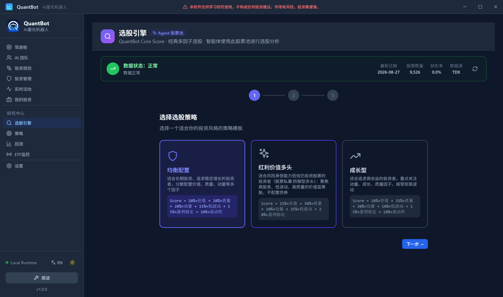
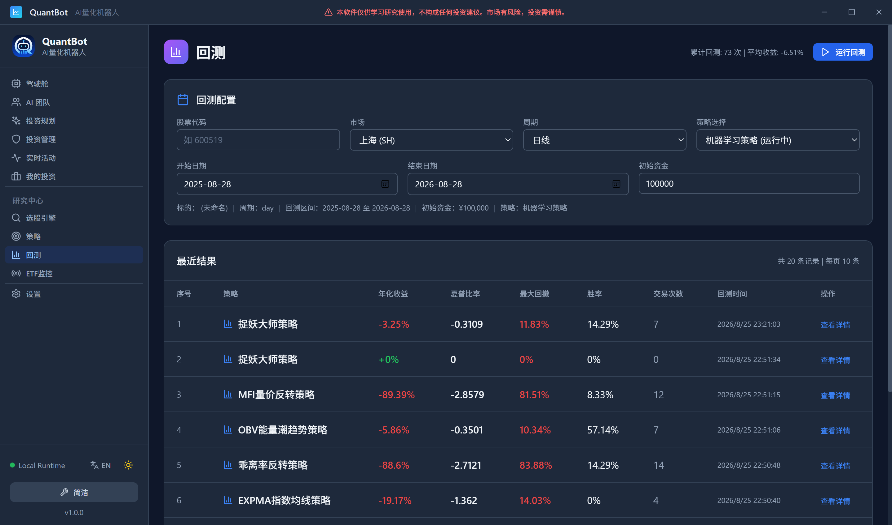

第三十章研究与调参：选股、策略、回测、每日策略
30.1我想自己动手改点东西
用了两周之后，我开始不满足了。 系统自己挑的股票没什么大毛病，可我总觉得“价值”那一项权重给得太轻——我是一个偏保守的人，更愿意为便宜和稳健付钱，而不是为势头付钱。 问题在于：我该从哪儿下手？ 页面上的输入框有十几个：策略模板、市场范围、因子权重、策略参数、回测区间……它们看起来都差不多，改起来都一样容易。可它们有一个巨大的区别，这个区别第一次用的人完全看不出来： 有的旋钮，你动一下，五秒钟后就能看到读数变了；有的旋钮，你动一下，四十分钟后才知道结果。 如果不管这个区别，你就会不自觉得只去拧那些反馈快的旋钮——而它们恰恰不是最重要的那些。30.2实验室里的旋钮
实验室里有一排旋钮。有的连着示波器，你一拧，屏幕上的波形立刻变；有的连着恒温箱，你一拧，要等二十分钟箱内温度才稳定下来。
有经验的人调试设备时有一个固定习惯：先拧那个立刻能看到读数的。
不是为了省时间，而是因为它的因果关系是清楚的。你拧了一格，波形动了，你就知道这个旋钮管什么。而恒温箱那个旋钮，你二十分钟后才看到结果，中间可能已经有别的东西变了——你没法确定是旋钮起作用了，还是恰好天气凉了。
调参最怕的就是这个：你改了三样东西，结果变好了，你不知道是哪一样起了作用。
30.3第一档：选股引擎（立刻出读数）
进“选股”页，最上面是三个策略模板：| 模板 | 代码名 | 它偏向什么 |
| 均衡 | balanced | 六因子按默认权重配，不特别偏 |
| 防御 | defensive | 更看重质量、低波动、盈利稳定 |
| 成长 | growth | 更看重动量、盈利增长 |
系统事实清单第 9 节；系统源码 internal/screener/smart_composer.go 的智能组合因子模型与三种模板；核对时间 2026-09-24。
\[\text{Score} \;=\; 30\%\times\text{价值}+20\%\times\text{质量}+15\%\times\text{动量}+\cdots \tag{30.1}\]
改完之后点“开始选股”，结果列表就出来了。这是反馈最快的一档：你不必等回测，几秒钟就能看到名次怎么变。
关于自定义权重的一条硬约束
自定义权重会先过一道校验（
这一道校验防的不是“算错”，而是“算出来但不可解释”——比如权重之和不为一、出现了负权重、或者某一项被写成 \(0\) 却仍在公式里占位。因为这些情况下的分数仍然能算出来，只是它不再是一张可以被读懂的排行榜了。
ValidateCustomWeights），不合法就不放行。这一道校验防的不是“算错”，而是“算出来但不可解释”——比如权重之和不为一、出现了负权重、或者某一项被写成 \(0\) 却仍在公式里占位。因为这些情况下的分数仍然能算出来，只是它不再是一张可以被读懂的排行榜了。
“我把权重调到让历史排名最靠前的那一组，就是最优权重。”
不是。自定义权重是表达你的观点的地方，不是优化器的输入。
这两件事的区别很具体：如果你按“历史表现最好”去找权重，那么你找到的是在历史上最好的权重——它精确地记住了这段时间里哪些因子有效，而下一段时期，因子有效性会轮换（第 第十四章 章讲的因子衰减就是这个）。
正确用法是这样的：先写下你的理由，再调数字。比如“我本金小、承受回撤能力弱，所以我把低波动和质量的权重调高、动量的权重调低”。这个理由是可以在三个月后拿出来复核的——如果它错了，你知道该改的是理由，不是数字。
系统里其实已经给了你三个“带着理由”的模板（均衡、防御、成长）。除非你有额外的理由，否则用模板比调数字更安全。

30.4第二档：策略管理与指标刷新（几分钟）
“策略管理”页是一张表格，每行一条策略，列出：夏普、最大回撤、胜率。行尾有启用/停止的切换按钮；页面顶部有一个“刷新”按钮。 这里要讲清楚一件容易混淆的事：这个“刷新”不是在重新读数据库，而是在真的跑一遍回测。ui/src/pages/Strategies.tsx）// 刷新：触发后台真实回测刷新指标（而非仅重读 DB），
// 紧接着重拉列表展示最新值- 它是慢的，因为真的在算；
- 它是会被自动执行的——每天盘后系统会自己刷一次；
- 它和“回测页”用同一套撮合与成本口径，所以两边数字应当一致。
从事故 #10 学到的一条工程判断
“慢”几乎从来不是数量问题，而是“不该算的算了”。
看到一次回测要两小时，第一反应不应该是“换个更快的机器”，而是“这 420 万次查询里，有几次是必须的”。
看到一次回测要两小时，第一反应不应该是“换个更快的机器”，而是“这 420 万次查询里，有几次是必须的”。
30.5第三档：回测与网格扫描（几十分钟）
“回测”页给的结果最多，也最容易被误读。 （一）六个数。年化收益、夏普比率、最大回撤、胜率、盈亏比、交易次数。 （二）权益曲线。以及基于真实权益曲线算出来的三个诊断：月度收益矩阵（按月聚合区间收益）、滚动夏普（窗口 \(25\) 根 K 线、年化）、Calmar 比率（总收益除以最大回撤的绝对值，用于横向对比）。 （三）参数网格扫描。选一个目标（sharpe 或 return），它会按 walk-forward 切分跑一组组参数，然后给出样本内最优参数和这组参数在样本外的表现两个数。
这里我要把第 第十七章 章那个结论用另一种方式再讲一遍，因为它是“调参”这件事的全部方法论。
命题 30.1（样本外报告的无偏性）
设有 \(K\) 组候选参数 \(\theta_1,\dots,\theta_K\)。记第 \(i\) 组在样本内的估计为 \(I_i\)、在样本外的真实表现为 \(O_i\)，并设 \(\{(O_i)\}\) 独立同分布、均值 \(\mu\)、且与选择过程独立（即样本外数据没有参与选参）。若按样本内最优选参
\[\widehat\theta=\theta_{\widehat i},\qquad \widehat i=\argmax_{1\le i\le K}I_i , \tag{30.2}\]
则
- 样本外报告的期望无偏：\(\E\bigl[O_{\widehat\theta}\bigr]=\mu\)；
- 样本内报告的期望有正偏：\(\E\bigl[I_{\widehat\theta}\bigr]=\E\bigl[\max_i I_i\bigr]\ge\max_i\E[I_i]\)；
- 因此“用样本内数字报成绩”与“用样本外数字报成绩”得到的期望一般不同，差就是选择偏置。
证明■
(i) 由 \(I\) 与 \(O\) 独立，随机指标 \(\widehat i=\argmax_i I_i\) 是 \(I\) 的可测函数，故 \(\widehat i\perp O\)。于是
\[\E\bigl[O_{\widehat\theta}\bigr]
=\sum_{i=1}^{K}\E\bigl[O_i\,\ind{\widehat i=i}\bigr]
=\sum_{i=1}^{K}\E[O_i]\,\Prob(\widehat i=i)
=\mu\sum_{i=1}^{K}\Prob(\widehat i=i)=\mu .\]
(ii) \(\max_i(\cdot)\) 是凸函数（作为线性函数的逐点上确界），由 Jensen 不等式 \(\E[\max_i I_i]\ge\max_i\E[I_i]\)。取 \(\iota=\argmax_i\E[I_i]\)，则 \(\max_i\E[I_i]=\E[I_\iota]\)，即“样本内期望最好的那一组”的期望；而 \(\E[\max_i I_i]\) 是“按每组自己的样本内读数挑出最优”的期望。两者之差即为选择偏置，非负。\(\blacksquare\)
安全调参的四步法
- 一次只动一个旋钮。动两个你就不知道是谁起作用了。
- 记下改动前的样本内 + 样本外两个数（回测页都有）。
- 改动后,先看样本内变没变——没变说明这个旋钮对这条策略无关，直接放弃,别浪费时间跑样本外。
- 只有样本外改善了,才算这笔改动的收益。样本内改善而样本外恶化,是命题 30.1 说的那种偏置在现形。

30.6第四档：每日策略（每天一次）
最后一块，是把上面所有研究的结果接进第二天的工作流。 每天盘后，量化分析师会调用一个工具select_next_day_strategy。它的作用只有一个：决定明天用哪条策略来管现有持仓。
如果你不指定，它会自动打分选优：
\[\text{StrategySelectionScore} \;=\; 0.4\times\text{总收益}+0.3\times\text{夏普}+0.3\times\text{胜率}. \tag{30.3}\]
注意这个打分有一个限制条件：只在“活跃”的策略里选，且要求三项指标不全为 0。为什么要有这个限制？因为一个从未跑出过任何成交的策略，三项都是 0，它的“0 分”不代表它不好，只代表没有数据。把它排除在外，是为了避免“零成交的策略因为恰好并列最低而被选中”这种荒谬的结果——这和第 第十七章 章网格扫描里那条“\(0\) 成交的一律排到最后”是同一条思路。
选出来的结果写进 daily_strategy_plans（以交易日唯一），字段包括状态、已执行卖出数、以及来源：
source = quant：量化分析师显式指定；source = auto：系统按式 (30.3) 自动兜底选优。
- 策略卖出信号优先于市场状态机——判势再差也不会拦卖出；
- 不受六维仓位系数缩放——缩放只作用于买入。
“我给策略加上十个参数，拟合得更准。”
参数越多，你在历史上能拟合得越准，同时在样本外的方差越大。这是同一件事的两面。
对这个问题，本书能给的实用建议只有一条：优先选参数少的策略。在系统内置的十七条策略里，双均线只有两个参数，超级趋势也是两个（周期、倍数）。它们不可能在回测里刷出惊人的数字，但它们也很难在实盘里给你惊吓。
第 第十六章 章那句“策略没有好坏，只有适用环境”，调参版的说法是：参数没有最优，只有“你有没有理由相信它”。
- 选股页（三种模板、市场范围、六因子面板、自定义权重校验、分页与因子详情、AI 评分拆解、因子进度条）：
ui/src/pages/StockScreener.tsx - 权重校验：
internal/screener的ValidateCustomWeights；模板与权重逻辑在internal/screener/smart_composer.go - 策略管理页（列表、夏普/回撤/胜率、启停、刷新）：
ui/src/pages/Strategies.tsx - 指标刷新（样本池回测、\(1500\) 根回看、worker 池、指标回写）：
internal/strategy/service.go的RefreshStrategyMetrics - 回测页（六指标、权益曲线、月度收益矩阵、滚动夏普、Calmar）：
ui/src/pages/Backtest.tsx - 网格扫描与 walk-forward：
internal/backtest/grid.go - 每日策略选择与打分：
internal/tools/daily_strategy_tool.go、daily_strategy_plans - 事故 #10（\(420\) 万次财报查询导致回测约 \(2\) 小时）、#6（
symbol前缀口径不一致导致配对策略 \(0\) 成交）
动手试一试（三十分钟，按反馈由快到慢）
- （快）在选股页选“均衡”模板跑一次，把前五名抄下来。
- （快）换成“防御”模板再跑一次。对比两份名单：哪几只换了？它们主要在哪几个因子上不同？（点开因子详情看进度条。）
- （快）把“低波动”权重从默认值手动调高一大截，再跑一次。观察名单变化，并写下你调它的理由。
- （中）切到策略管理页，点一次“刷新”。然后去做别的事，过几分钟回来看夏普/回撤/胜率有没有变化。
- （慢）切到回测页，对同一条策略跑一次参数网格扫描。把
BestIsSharpe（样本内）和OosSharpe（样本外）抄下来并排比较。两个数差多少，就是这次调参的“水分”。 - （每天）在 AI 决策页的【今日交易策略】卡片上，看今天用的是哪条策略、它的
source是quant还是auto。